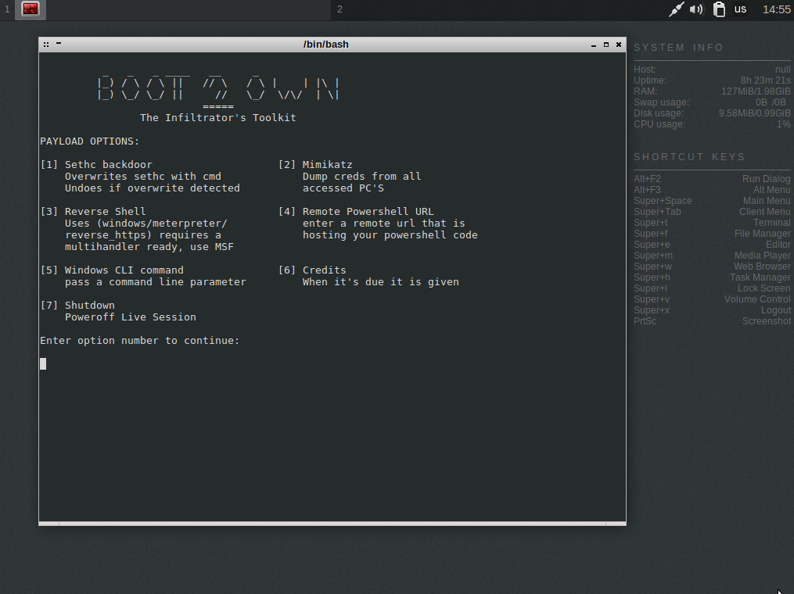

|| The boot2own toolkit, Author: xor-function || 10/20/2015 Back to main
Disclaimer: Mind your local laws, use discretion and common sense.
Most have heard/know that physical access is total access when it come to
computer security but is seems the only way this is visualized by most is
resetting a password or dumping forensically the contents of a hard drive
for later inspection.
So I created the boot2own tool kit as it demonstrates the implications of
having physical access just to one domain machine.
Menu

To explain more about what this toolkit does I will post a snippet from
the README that's hosted on the following git repo.
https://github.com/xor-function/fathomless/tree/master/boot2own
Boot2own is a toolkit that generates a live OS from a crunchbang iso. When a
workstation is booted to this live environment its hard drive is mounted and
the NTLM hash of the local admin (RID 500) is extracted. The admin hash is
then leveraged in attacks against a Windows domain network using a patched
winexe binary.
DEMO